| Brooyar Climbing Guide |
By Lee
Cujes with help from Neil Monteith, Herb Brandmeier & Saul Squires. January
2000
Last
updated
June 2008
|
|

|
|
INTRODUCTION
A very different crag
for South East Queensland. Brooyar is a large State Forest with
at least five separate sandstone crags. Many routes are overhung,
pocketed and sportingly bolted giving pumpy climbing. Due to
the nature of the soft sandstone, some bolts in this area may be
dangerous - take care, if a bolt wobbles, it's about to fall
out! This is gradually changing though thanks to the good work of Safer Cliffs Queensland. Please consider donating. The Forestry Department has placed gargantuan ring bolts
at the tops of most of these climbs making descents and belays
very easy. It's worth noting that nearly all routes (even sport
routes) require the climber to top-out and belay up their second.
Very few lower-off's exist here.
ACCESS
The area is situated
about 20km north west of Gympie, with the turn-off 180km north
of Brisbane. From the 80km/h sign as you leave Gympie drive
north for 10km to the Kilkivan turnoff (Wide Bay Highway). Turn
left down this (across the bridge) and drive along for 4.6km
to find the Glastonbury Creek State Forest (Brooyar State Forest)
turnoff on the left. This bitumen road soon relents to dirt,
which meanders through the forest with numerous small roads
branching off on each side. After a few kilometres, you'll reach
a fork. Straight ahead is marked as Petersen Road, and has a
campsite marker. Go this way to the campsite (1.1km). The right branch
(up a hill) goes to the crags (most of which have signposted car parks). |
 |
 |
 |
|
Above: Print out the above maps. Check out the Crag Snapshot if you're interested. |
CAMPING
If you follow
Petersen Road to its conclusion, you'll reach the Glastonbury Creek
Recreation Area which has good grass campsites. There is water (apparently
not potable, you should bring your own), pit toilets and
fireplaces (BYO firewood, collecting is prohibited). The creek can be good for a dip when there's
been rain. Camping is $4.00 per person per night (as at 2006) and must be booked either online or over the phone. You cannot book or pay for camping once you arrive.
NOTE
This guide is not definitive. If you know something is incorrect, put a post up on qurank.com so we can fix it. Question marks after grades signifies a wild guess.
Stars are given out willy nilly by me, mostly on climbs I have done
and thought reasonable. No FFA information most likely indicates a Herb route.
| LEGEND |
| BR |
Bolt runner AKA carrot bolt (requires a removable keyhole hanger) |
| DBB |
Double bolt belay |
| FH |
Fixed hanger |
| RB |
Ring bolt |
| SLCD |
Spring loaded camming device (sizes relate to Friends not Camalots) |
 |
Sport route. Fully bolted. No trad gear required, but may still require slings. |
| UB |
U-Bolt. |
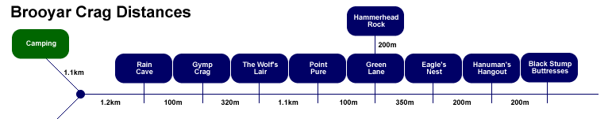
An atmospheric crag with an impressive 40m high main
wall which hosts perhaps Brooyar's best climb (although this is a topic for considerable debate!), Looking For The Sun (19). There
are some shorter routes for the beginner, and some juggy roof pumps for the more
advanced climber. In addition, some steep thin faces should provide enough skin
pain for any budding masochist. Eagle's Nest receives shade in the morning, so
get in early.
Climbs are listed from R to L.
The first decent thing found as you walk down the hill is a 6m
high, smooth, pockety bouldering wall. On the L of this is a short
slab. L of the slab, scramble easily up the rocky slope to the first
route located on the upper tier.
Lilliputian 6m 14
The obvious finger crack 20m from the road. More of a protectable
boulder problem than a climb.
FSA Herb Brandmeier, Paul Wright 1991
Giftzwerg 8m 14
15m L of L.
Up to L of crack.
FSA Herb Brandmeier, Paul Wright 1991
Rumpelstilzchen
7m 14
Up the orange streak 2m L of G.
FSA Herb Brandmeier, Paul Wright 1991
Piccolo 6m 14
Up fine seam at black streak at L end of this wall. Poor protection.
FSA Herb Brandmeier, Paul Wright 1991
20-30m of
walking L, back down on ground level, past some scrappy, lichenous
black slabs. Note that at this point there is a lower tier of cliff
which is where someone decided to park their car (see picture Climb
magazine issue #4 pg 19). That will be described later. Marvel at
the large, eaten-out white and orange scoop.
* Miss Kandy
Kane 20m 15
One of the worthwhile easier routes here. The line going directly
up the R arête of the scoop past two BR's, a FH, optional #2 or #2.5
flexi SLCD and a final BR to finish at rap rings. Nice juggy going
to the top of the scoop, then open, balancy climbing to the rings.
Lee Cujes, Erik Smits 30/12/99
The next four routes are L of MKK, so scramble up
to the starting ledge.
Tally-Ho The Fox 20m 23
Initialled. Starts at the L of the white scoop. Up thin vertical
flakes. Move L onto the big protruding horn, FH. Hard move up and
onto the face with BR. Up tending R to the cave and through the centre
of the roof (hidden BR). Take assorted wires and slings.
Herb Brandmeier, Paul Wright 1991
Private Investigation 20m 19
3m L. Up thin black arete onto prominent flakes, RB. Straight
up rain drain, BR's. Up onto and through orange wall, BR. The top
half is well protected by lots of slings.
Herb Brandmeier, Paul Wright 1991
* Up A Rat In A Drain Pipe 20m 18
A steep, fun start off the ledge. Two FHs and five BRs. Take a couple
of slings. You can finish either L through the bulge (recommended)
or R up the black slab (both variants are bolted).
Herb Brandmeier, Joan Vickers 2002
** Free Range Heggs 20m 17
Starts at the very far L end of ledge. Up the orange scoop past FH's,
then wall above. Three FH's and five BR's.
Herb Brandmeier, Joan Vickers 2002
|
Walk back down to ground level,
and circle back to the very lowest section of cliff. It should
be obvious as a very chalked, bottomless overhanging prow. Two
popular sport routes climb this.
* Bosnian Broth 7m 23
The L route with two FH's. The topout mantle is interesting.
Saul Squires 1996?
* Blinky Bill's American Breakfast
8m 23
The R route with three rings. You'll want to stick clip
the first one.
Aubury Carter 1997? |
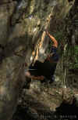 |
|
Above: Adam Donoghue on Bosnian
Broth |
|
If you continue R from these routes on the lower tier (past the red car), there is some worthwhile boulder problems. From the sport routes, walk back up L to the section of main wall below Private Investigation.
* The Girl Who Lives
On Heaven Hill 8m 17
Really nice. Starts off the large block. A couple of unprotected moves
L give a good horizontal break (#1 SLCD), then up R past another break
(#1.5 SLCD) and pockets to FH. Traverse a move or so L, then make your way back R through the overhang. Use the DBB located above the next route.
Saul Squires, Dani Geraghty 1993
Travails of a Tripping Termite 30m 14
Starts off the block at the start of The Girl Who Lives..., traverses along the obvious line for someway, then climbs back to ground level - pretty stupid says Saul.
Saul Squires, Dani Geraghty 1993 |
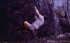 |
|
Above: Neil Monteith bouldering R of the Blinky Bill prow |
Digit Crucifixion 10m 18
Starts about 3m L. Very thin wall to horizontal pocket (SLCD). Hard mono
pull to FH and then to good holds. From here it's a jugfest (gear) up to the small tree.
DBB.
|
*** Looking For The Sun 40m 19
The best route here - a must-do! It's a pity this amazing route is somewhat spoilt by a vicious little start. Oh well. Start 3m L of the previous route at the
mini-arête. Up this to the FH and then a hard move past it to the break. Natural pro leads you up into the sweet orange rock and the second FH. Beautiful jugs up and R to third FH, then up and L to a
crackline. Up this placing lots of gear to ledge, then more juggyness past fourth FH to cave. Sit and have a break before facing the rock again. Step R out of cave and up the pumpy, black, overhung
groove to the top. Superb!
Saul Squires, Dani Geraghty 1993 |
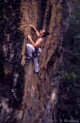 |
|
Above: Lee Cujes Looking For The
Sun |
The 30m wide section of wall L of LFTS is black,
high, juggy and quite easy. A few routes have been established here,
but due to the homogenous nature of the wall, accurate descriptions
are difficult. Be careful with gear on these routes.
** The Pioneer
40m 16
Initialled. 5m L of LFTS. 10 BR's, 1 FH. A good introduction to lead
climbing.
Herb Brandmeier, Joan Vickers 1998
The climbing
on the next two routes is very similar, except for the finish. You
need an assortment of big wires for both.
* 2 For Tea
35m 14
Initialled. 4m L. Five BR's, wires, slings.
Herb Brandmeier, Joan Vickers 1998
* Tea For 2 35m 15
4m L. Five BR's, wires, slings.
Herb Brandmeier, Joan Vickers 1998
** 2,4,5-T 42m 17
Starts at the tree after the corridor. Six BR's and one FH. Move L
at the beginning of the big V-groove, then straight up. A worthwhile
climb.
Herb Brandmeier, Joan Vickers 1998
Little Ray Of Sunshine 45m 17
3m L of 2,4,5-T. 10 bolts leading up and through small roof.
G Page, D O'flaherty 7/04
** It's A
Long Way To Tip A Fairy 45m 16
Start at the
end of the corridor 4m past tree. Straight up, and finish through
centre of bulge. 8 BR's.
Herb Brandmeier, Joan Vickers 2002
At a right
angle to the Tip a Fairy bollards, you find two short but nice little
climbs, one corner crack and one face climb (not named). 3 BR's on
the face climb.
Choss And
Chickenheads 45m 16
About 35m L
of LFTS and 1m L of detached pillar of rock. Climbs up a pocketed
slab to the stupid first BR at about 6m. Above the BR is most likely
naturally protected and is slightly vegetated in parts. Not too inspiring. Take
slings for pro on chickenheads and beware of the chossy headwall.
Surprisingly, this route does get traffic.
* Chicken Wings
15m 16
4m L of CAC. Five BR's, chain belay.
Herb Brandmeier, Joan Vickers 2002
Prima Diva 8m 18
3m L of CW. One FH, two BR's. Chain belay.
Herb Brandmeier, Joan Vickers 2002
Prima Donna 8m 22
2m L of PD. Two FH's, one BR.
Herb Brandmeier, Joan Vickers 2002
(Unknown)
15m 25
Great moves to slab, then fight lichen to top.
Hayden 10/2004?
As you continue
walking L, roofs start to appear. The next few routes are in the first
little roofed-amphitheatre encountered.
Who Is On First! 15m 23
Starts about 15m L of "CAC" at crackline running through the middle
of the wall below the roof. Climb the crack on natural gear to the
juggy 1m roof. Clip BR around lip, then pull through to face above.
Up to ledge. Final wall (BR) to tree. Rap off. At the moment it's
vegetated and needs cleaning.
Herb Brandmeier
* Celluloid Hero 15m 21
There's not many roofs you can get hands-free rest on. 5m L of
WOF and 1m R of arête below overhanging, triangular prow below roof.
Up and out the prow (awesome jughandle threads) then move into roof
flake while copping that rest with a styleboss leg-hook manoeuvre
over the top of the prow. Clip FH on lip and then power up the wall
above (BR) to ledge. Wade carefully through the lichen up and R to
the recently installed rap station.
Herb Brandmeier, Paul Wright 1991
(Unknown 2) 15m 17?
Starts 1m L of CH on the arête. Up arête to thin crack. Follow
the crack as it widens up a mini-corner to a tree belay. (Safety note: we've been told this tree is now very dodgy - take care!)
Leave No Turn Unstoned 13m 19
3m L of the arête you can walk into a small enclave-corner. Do
it. Good. Now climb the blocky corner on natural gear to beneath the
daunting but surprisingly juggy wall (BR and FH). Climb this overhang
on jugs to a horrendously hard and sloping top out (a chain is needed
here).
Herb Brandmeier, Paul Wright 1991
About 15m L, on the far R-hand side of the next amphitheatre is
a fantastic eucalypt growing up against the rock.
(Unknown 3) 20m 16?
L of a couple of trees at the L end of the amphitheatre is this
pleasant-looking naturally protected crackline running up the slab. With
its bottomless start, it could be harder.
About 15m L of that crackline is another orange/white amphitheatre
which has a bolted route running up the middle of it.
Woosah 24/25?
Project before "Johnny Gun".
FA G Page 3/05
FFA Soon! (please stay off until sent)
* Johnny Gun 15m 22
Cue the 70s porn music. Up wall to ledge below roof (2 BR's),
then great roof jugs past a FH. Move around the lip (crux) and clip
the second FH then onto ledge with double ring rap station.
Neil Monteith 1997?
15m L of JG, you can scramble up into another little overhanging
enclave where two walls meet. The L is 8m high, orange, pocketed,
and slightly overhung. The R is sandy, very rounded and smooth, and
very overhung. Routes could be done here.
L of here, the rock becomes a bit vegetated in the breaks - walk
about 20m past the enclave, past some blue, lichenous, ledgy rock.
(Unknown 4) 20m ??
Shallow orange
corner. BR's.
FA: 2004?
The Big Nothing 7m 11
8m R of the
Let's Bail arete. This is a good beginner route with great gear up
a corner finishing at a tree belay.
C&D 7m 26
Single ringbolt on white wall. Impossible-looking boulder problem
dyno to break, then up to tree. Has been soloed.
FA: Hayden 2004
Stepping Stone 10m 23
Feeling kinda sporty? The thin wall 3m L of corner and 2m R of arête.
Three FH's (the top one is a 45 deg hanger) up a smooth wall leads
to a juggy top.
Albury Carter 1997?
The Dog's Day Off 10m 19
The vertical crackline 1m R of LB.
* Let's Bail 10m 20
The arête 5m L of corner. One move to a BR, then up and swing L around
arête to pockets (FH). Crux moves above this (?) up the blank arête
lead to a break and another BR. To finish, "let's bail" off to big tree on R to avoid the mank. The last route Saul did at Brooyar.
Saul Squires, Dani Geraghty 1993
Bust A Move 10m 21?
3m L of arête. Marked BAM. Four BR's and optional nuts to chains (straight up). A LHV was also climbed a month later.
G Page 3/04
Further to the L the buttresses become quite small and are probably
only good for bouldering.
I am not sure where this next route goes, someone let me know.
Dreaming of the Blueys 15m 24/25?
Marked Dotb.
Hayden 10/04
A beautiful small crag with some of the best rock around.
Recent rebolting efforts have made the routes even better. Drive down
the road about 500m past Eagle's Nest and park in the Point Pure carpark,
but walk back down the road (towards Eagle's Nest) to the "Green
LA" sign (which actually stands for Green Logging Area =). Don't walk down "Greene Road" though. 10m
R of Greene Road, a small track leads down a gully to the base of
the cliff. Green Lane is shaded in the morning.
Climbs are listed from R to L.
The descent gully splits the crag in two. The left hand side (looking at the
crag) is much bigger than the right. Let's start around 15m R of the descent
gully:
|
DH3 6m 22
2m R of AWITG. Filthy and lichenous. To see any action this
route would need a thorough cleaning and bolting. Starts at
the obvious undercling then straight up the wall on worsening
slopes. Crux at 4.5m.
A Walk In The Garden 10m 15
Extremely dirty - stay away! The 110 degree corner 20m R
of the descent ramp. Up corner to tree belay on R.
* DH4 7m 22
Perhaps the best rock at Brooyar. 6m R of TDC. Recently rebolted with three FH's to lower-off. Has a great mono pocket to play with.
The
Dirty Corner 8m 17
Not overly dirty, could
be okay. 10m R of the descent gully is this ever-steepening
naturally-protected corner with an exciting exit.
Coexisting With
Insanity 8m 21
The
orange arête 1m L of TDC. 2 FH's to ledge, then up past a third FH to the
top. You may wish to stickclip the first. |
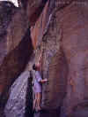 |
|
Above: Neil bouldering on
some superb rock just L of DH4. The Dirty Corner is visible behind |
Thanks For The
Fish 10m 17
2m L. Grade 17 leaders will find the start requires a stern
crank. Up wall past a two BR's before trending L to DBB. You
might as well finish at the top of the cliff though.
Saul Squires, Dani Geraghty, Keri Green 1993 Green Eggs and Spam 8m 21
Originally soloed by Saul in 93, this is now a bolted route. In between TFTF and BED, three FH's to chain.
Saul Squires 1993
Bolted by: Herb Brandmeier, Warren Prentice 2006
* Book Em' Danno 10m 13
3m L of TFTF. First climb to the R of the descent gully.
Starts a couple of metres left of TFTF at the small corner.
Crux is down low. Up slabby wall past two BR's and DBB to overhung
juggy top. The top out finish is apparently 16.
Dani Geraghty, Keri Green, Saul Squires 1993
Inspiration 8m 16
The seam on downhill side of
big tree on descent track. Puke. |
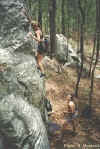 |
|
Above: Philippa Newton leading Book
'Em Danno |
|
Now we move over
L of the descent gully.
Tests And Titosterone 9m 10
Probably not good. The crack downhill from the big tree on the
descent ramp and below the boulder. Tree belay well back.
Sweetness And Light 10m 12
The obvious yellow lichenous crack 2m L of T&T. Tree belay
well back.
Angel Dust 15m 21
"Big, evil, overhung crack thing". The R-leaning overhung
corner to ledge, then up crack to top. A bit grungy.
Uzis on Speed RHV 18m 19
After the first bolt, move up and right to a #2.5 SLCD at R
of horizontal break, then around arete. More natural and FH.
R into "pea-pod" then back L.
Saul Squires, Dani Geraghty 1993
* Uzis On Speed 15m 21
Left of the crack is a nice orange corner and face some
BR's. Start in the crack corner. Up hard start on gear. Up into
beautiful orange corner (wires). Clip bolt on R and step onto
the excellent face. Up with #1.5 SLCD and BR to rooflet below
black face. Up L onto this huecoed face (cruxy) clipping final
BR (don't clip too early) and then up to the top (DBB). A RHV
(19) goes up and R after first BR around arête (FH and gear). |
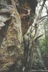 |
|
Above: Lee attempting the onsight
of Uzis On Speed |
** Sea Of Fools 15m 22
A couple of metres left. This climb has a very obvious face up the top covered in hundreds of pockets.
Tricky overhung start past a
BR onto deceptive slab with smallish SLCD. #4 SLCD in wide break, then up
and clip SOT's FH out L with long sling. Now that excellent pocketed wall with a
BR and a FH to the top.
Andy Anderson, Saul Squires, Dave Whitworth, Dani Geraghty 1993
*
Ship Of Tools 15m 22
As for SOF to second BR at pocketed wall. Up a move or two then veer L
to arête (BR). Up this exposed arête.
Saul Squires, Dani Geraghty, Andy Anderson 1993
* Herb's Hammer 10m 22
Start from boulder 2m L of SOT. Chalked undercling and jugs
(FH) to R-hand dyno. Over bulge (FH) and finish as for SOT (up
the arête past a BR).
Herb Brandmeier, Paul Wright 1991 |
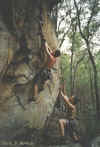 |
|
Above: Neil getting a spot while
clipping the first bolt on Herb's Hammer |
** Hate Crimes 15m 23
A varied and technical classic. Start up overhanging corner L of SOT. Power
up past first FH to break and obvious SLCD slot. Continue past 3 FH's.
Difficulty in reading the sequence makes this a good onsight.
Saul Squires 1993
Sliding Into
Cheeseburger Hell 15m 24
A contrived variant finish
to HC. Start as for HC to the third FH (clip with a long sling).Traverse
2m R to FH on face. Continue R, then power up to good hold, clipping
a final FH back L. Finish easily.
Saul Squires 1993
* Herb's And Spices 15m
21
Herb's first new route. A hard start up the R-sloping
arête. Three FH's, BR and final FH.
Herb Brandmeier, Paul Wright 1991 Mr Medium Man 15m 23
1m L of HAS and just R of
the obvious roof. A very hard start then up passing four BR's.
Saul Squires, Dave Whitworth 1993
Left of MMM is an obvious chalked bouldering wall capped by a small roof with
an incipient thin seam running up it. Good practice for finger locks. Walk 10m left underneath the roofs to get to the next
climb.
No Ethics 15m 23
Well-named route setting an unpleasant precedent (slots at the start
of this route have been chipped - totally unacceptable). After blank
wall, through overhang with some acrobatic moves. Two FHs, two BRs.
Herb Brandmeier, Paul Wright 1991
No Scruples 15m 23
Herb Brandmeier, Paul Wright 1991
* Herb's
In The Fernery 15m 18
Off block onto easy orange slab climbing this past
a BR to roof. Up overhung headwall past two RB's. Once was the scene of a huge controversy aired on the pages of ROCK magazine.
Herb Brandmeier, Paul Wright 1991
* New Day Rising 15m 15
A nice route when dry. 3m L of HAS. Pull onto the grey slab with a
grade 19 crank, then cruise up passing a BR and two FH's to an awkward
bulge. Finish past a final BR to a DBB.
Dani Geraghty, Saul Squires 1993
The End Is Nigh 12m 13
10m L of NDR up the juggy, lichenous slab past three BR's.
Keri Green, Dani Geraghty 1993
Herbal Tea 10m 22
10m L again is a detached pillar with one route
up it. Up past a couple of FH's and a BR. Rap chain at top.
SCQ note: old hardware needs removing.
Herb Brandmeier, Paul Wright 1991
Some good longer routes with a mixture of bolts and
natural protection. From the Eagles Nest carpark drive 500m along
to find an intersection. Take the left road and park in the Point
Pure carpark. From the lookout walk left and down to the base of the
cliff. The classic overhang The Great Devoid is found on the far R
of this crag. As Point Pure features Brooyar's softest rock, beware of choss and keep an eye out for dodgy bolts. If it moves, don't trust it!
Routes are listed from R to L.
The Forgotten Name 12m 16
Start R of DJA. Four BR's with a slight left trend in the top half.
Tricky start and finish.
Ross Ferguson, Matt Williams 1996
The Forgotten Name RHV 12m 12
Start as for the original. At second BR, move R to break (gear) then
up to BR and top.
Ross Ferguson, Geoff Osbourne, Ben Carter 05/06/2004
Don Juan's Appendix 12m 12
Starting just R of the obvious
overhang, boulder up to a BR. Climbing diagonally L, move past another
BR and a large wire to the last BR. Trend L over the prow (don't go
through the orchids).
Saul Squires, Dave Whitworth 1993
Over De'void 15m
16 As for DJA to second
BR, then L towards the void to another BR, then straight up
(runout) to a final BR. A fall before the final BR could be
very serious. That said, this route still seems to get plenty
of traffic for some reason.
Saul Squires, Dani Geraghty, Dave Whitworth 1993
*** The Great Devoid 15m 22
A testpiece at the grade. Start under roof. Stickclip first
ringbolt, then out very steep overhang on mega spooky but amazingly
solid flakes (past ringbolts). Push through onto the less-steep,
juggy face (optional #3 SLCD and FH).
Saul Squires, Dani Geraghty, Andy Anderson, Dave Whitworth 1993
* Losing Fingers 8m
25
Like pain? It seems the punters do! Very overhung
line of finger-destroying holds 5m L of TGD past three rings
to double rings.
(Bar Room Brawl - Phil's Project) 7m ??
4m L of LF past the amazing pockets. Keep off until sent.
|
 |
|
Above: Neil leading The Great
Devoid |
** Reid 15m
19
6m or so L of LF is a corner that goes up and to the R. Three
BR's and a #1.5 SLCD. Continually interesting slab climbing.
Guy Pearce, Chester
* Sinister Exaggerator 15m 22
Starts 3m L of the above climb, and just R of the arête.
Four bolts, #2 SLCD placement and some sloperness. Gritty.
Always feels hard and for some, impossible. However tempting, the tree is not in.
Neil Monteith 1996
Figjam 13m 21
Yeah, let's all pay homage. Further around from SE is a set of L-leaning twin seams.
Climb the L one. The top needs a clean.
I tried hard to find these next two but had no luck. No great loss.
DH1 4m 21
At the R end of the ledge on the first set of good holds. Straight
up to ledge.
DH2 6m 23
Same start as DH1. Up to the L.
Now comes a black, R-facing
wall, 9m L of F.
|
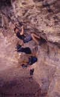 |
|
Above: Marty Blumen working on a
project on the lower tier which was too soft to take bolts |
(Unknown 2) 15m 18?
Not inspiring. Up middle of the
black wall past a BR and a ring.
Catch your breath as you walk down L of the black
wall to find another lighter coloured wall which is big, overhung
and blank. Impressive! There is an upper
and lower tier of this wall. The upper tier has some climbs on it.
The lower tier has bouldering. First the upper tier:
* Pebbles 22m 25
Featuring some very burly undercling/pinch moves, nice sequences and a balance slab finish. Six RB's to anchors. Bloody great climbing, but still needs a good clean.
Craig Pohlman, Andrew Audsley 24/12/04
* The Missing Link 8m 21
The exposed link-up to The Great Barrier Reef. Starts on the furthest
protruding part of the ledge (walk along to DBB on ledge). Rebolted in 2004(?), this route has one ringbolt, and three FH's.
Herb Brandmeier, Paul Wright 1991
Above and to the L of the finish of that climb is a DBB that is reached via
abseil, and is the starting point for the following route. To get there, rap
down the R-side (facing out) of the prow off the big rings.
|
*** The Great Barrier
Reef 20m 13
An excellent, adventuresome classic starting at the semi-hanging
DBB and climbing diagonally R following 6 or 7 BR's up the juggy,
exposed arête. It is a very obvious line and you can get good
photos with a telephoto lens from the lookout. A great route
to wow the beginner.
SCQ note: Needs rebolting with glue-in
rings.
Dave Whitworth, Michael Long 1993
Now back down to ground level, L of TGBR's prow:
Tight As A Drum 30m 24
A fearsome-looking short corner perched up in space, but actually pretty fun. Lead
up the short lower tier past a BR (long sling) to the ledge where the route is
initialled "TD". Up into the overhung corner (two FH's and fixed wire). Lean out and clip bolt, before facing a mega-move R to a jug on the arete. At least the fall is clean! The route was originally done pulling on this bolt at 22 A1 (probably the go for your seconder unless they enjoy prussiking). Straight up the
juggy wall above past one FH and a couple of bits of trad.
FA Herb Brandmeier, Paul Wright 1991
FFA Lee & Sam Cujes May 2008
Now there is a black, juggy, vertical wall with highly featured rock. Quite impressive, with a number of natural pro routes on it. The natural pro routes are pretty scary
because the rock isn't that great, but at least it's juggy. |
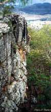 |
|
Above: Lee races up the headwall of
The Great Barrier Reef while Neil nervously watches the approaching thunderstorm |
** The Cornflake Climb 20m 18
Starts to the L of the main overhangs below an overhanging block
at the top. Up and right through the overhang to the big ledge. You
can also go straight up, of course, doing it the easy way. But, who
would want to do it the easy way? The third bolt, hidden in a big
pocket, is visible from the ledge.
** Coco Pops 20m 15
2m L of TCC, marked CCP. Seven BR's. More user friendly than TCC, with a tough little roof move which is often a "first real heelhook, wow!" move for the leader. Fairly runout and airy for the grade.
MD 20m 14
Initialled. 5m L of the previous route at the very old paint initials
- you may not be able to see them. A rather unprepossessing route
about 5m R of ICSJ. Up the wall with somewhat sparse pro to a juggy
crack at about 10m. The route does see a bit of traffic.
Cold Fusion 20m 17
2m R of ICSJ. Six BR's. Move R after 5th bolt into right-hand crack.
Not so good.
Herb Brandmeier, Paul Wright 1991
Islamic Cowboys Say Jihad RHV 18?
As for ICSJ to ledge. Up and R on wires to BR below converging cracks.
Up past another two BRs.
Islamic Cowboys Say Jihad 20m 16
Initialled. Start just right of stump, then climb past two BRs to ledge.
Up and left on wires and cams to BR at start of left-leaning crack.
Straight up past another BR.
Saul Squires, Dani Geraghty 1993
The Back of the Chimney 8m 8?
The back of the obvious chimney at the big tree. Rap down. Start below
and top-out in the gap between the boulders at the back of the chimney.
The Middle of the Chimney 8m 8?
Start below and top-out in the last gap between the boulders before
the front of the chimney.
The next routes are located beneath the lookout.
The Jamb Crack 15m 20
The next wall round to the L of the black juggy wall has an obvious
hand / fist crack in it up high.
Big Mouth Short Crack
20m 22
Start 2m L of TJC. Mantle up to a BR in orange enclave. Traverse
L and mantle out onto wall (wire). Either climb out L onto face trying
to find the BR's amongst the forest of lichen, or trend up the natural
line (gear) until you step L (BR) and reach the overhung, bolted corner
(two big FHs). Up this with some difficulty to finish at the lookout.
Overhanging Corner 20m 21
Your imaginative route-naming dollars at work. Start 6m L of
BMSC at slab underneath Hovercraft's starting platform, behind the big boulder. Up the slab
(BR) passing by the cave/platform at 5m and onto the face above. Up
the lichenous face (BR's) to arrive at the headwall 1m L of the bolted
corner. Up this (FH) to finish at the lookout.
Herb Brandmeier, Joan Vickers 2003
* Your Hovercraft
Is Full Of Potatoes 20
L again is this really nice arête with about five BR's or so.
It has a well protected but awkward flaky roof move (crux) at the
start and then up the juggy bolted arête. To get to the start walk
around L and then up to the start platform.
Saul Squires, Dave Whitworth 1993
** Suddenly Sober 20m 14
3m L of YHIFOP, starting at rooflet with big flakes and jugs (crux).
Clip two rings while moving up on jugs to third ring and good wires.
Up to rooflet and fourth ring. Step L around roof and top out. Classic!
Ross Ferguson, Geoff Osborne, Ben Carter 05/06/2004
I'm Not Lichen It 10m 16
Up the obvious corner 5m R of Sunny Day. Not that bad.
Gareth Llewellin, John Taylor 15/04/2006
Now you've got to walk up a little gully to find
an overhanging manky-looking arête.
Sunny Day 9m 21
Initialled. A homemade hanger that'll set your teeth on edge,
followed by rusty BR's up a highly vegetated face. You wouldn't do
this route for money. Rap chain at top.
Rainy Day 9m 18
Initialled. 1.5m L of SD. Massive flakes to BR, then a homemade
rusty FH, then up. Rap chain at top.The rock looks okay, but supposedly
the big flake on one of these climbs creaks when you grab it. Sounds
fun.
No More Gaps 10m 17
Ross Ferguson, Matt Williams 03/1999
A further 1.1km down the road from Point Pure is The Wolf's Lair. The rock is
pretty good
and all the bolts are glue-in's. Park where a small dirt road branches off on the
L side of the road and walk across the road and down to the cliff. There is basically no track, so you'll have to
search around a bit - look for the top of the cliff! Walk down the left side (looking out).
Routes are listed from R to L.
|
* Predator 13m 24
Start 2m R of Awesome Wells. Thin slab (FH) to ledge. Up
overhanging wall (#1 SLCD and two FH's) with some technical
moves to chain.
Neil Monteith 15/3/98
** Awesome Wells
15m 21
A classic overhang and pretty solid at the grade. Initialled.
Four BR's, FH to chain.
SCQ note: old chain needs removing.
Herb Brandmeier, Paul Wright 1991
* Awesome Fearsome 15m 22
Initialled. 2 BR's and one FH. Not much harder than the
original.
Herb Brandmeier, Paul Wright 1991 Sand In My Pants 15m 17
Starts in the fairly obvious corner 2m L of AF. It follows the corner up until you are standing on a ledge next to a large epiphyte, then traverses
R to the
arête and finishes up the dirty, sandy slab with good pro in the crack in the wall to the
R. Not
even recommended by the first ascentionists.
Tom Walsh, Radomir Schmidt 4/98.
Sheep Clothing 13m 21
Stickclip FH then boulder up overhung wall trending R past BR to
mini roof and ledge. Thin moves continue up a faint corner past a BR & #1.5 SLCD to finish at chains.
Neil Monteith, Lee Cujes 15/12/97. |
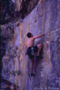 |
|
Above: Neil on the first ascent of
Predator |
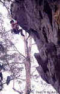 |
|
Above: Lee nailing the last move on
Awesome Wells |
Suitboy 13m 21
Layback up corner on natural gear to overhung arête. Clip FH and
climb up and L to jug on lip. Clip BR and mantle ledge. Up face above
to chain.
Neil Monteith, Dan Meyers 27/10/97.
|
* Carnivore 9m 28
The hardest route at Brooyar went begging for 11 years! The recipe blends some modern techo bouldering with some old school flavour in the form of tough fingerlocks...mmm, zesty! Rebolted after the first ascent (four rings) to encourage repeats! U-bolt for belayer on ledge to start and rap anchor at top.
SCQ note: two old FH's need removing - 3/8" bolts.
Inspiration: Neil Monteith 25/10/97
Perspiration: Lee & Sam Cujes May 2008
The next route climbs an arete above Carnivore. You rap into it down a gully, from the top of the cliff.
* Bio Logic 12m 13
Rap down to tree belay at base of two arêtes. Climb the R one
past three BR's and a chicken head sling. Overhung in places
and very juggy.
Dan Meyers, Neil Monteith 26/10/97 |
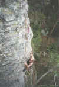 |
|
Above: Philippa seconding Bio Logic |
The Big Bad
Wolf 15m 23
The line of
ring bolts at the far left end of Wolf's Lair, about 10m L of Bio
Logic. Through a small rooflet, then up a blank corner/face, to rest
beneath the roof. Swing out the roof on jugs passing two rings and
an optional #3.5 SLCD. Pull the lip (no pikers!), and finish hands-free
on the ledge. Rap.
Chris Coghill 15/7/2000
Good bouldering is found on the three metre high wall below Carnivore. No established
problems have been recorded as most are around V0.
1.5km from Point Pure and 500m past Wolf's Lair on the R is the small area Gymp Crag. Only one route exists currently which crosses the lip of this big cave. It's The Gymp is Sleeping (21) and is a bolted sport route covering some mega steep territory. Good bouldering is to be had on the far
R of the crag.
Again, this small area is 1.4km from Point Pure and is partly visible from
the road off to the R. Park off the road before the yellow "S -
curves" road sign and walk up R toward the rocky outcrop. Walk down around
this to encounter a large roof with solid huecos and fins. Superb roof
bouldering with great landings are to be found here, even when it's pouring
rain, which is the area's main drawcard. None of the following problems use the
bottom ledge. Saul says: "I don't want to steal anyone's thunder, but the problems described sound remarkably like those done by me and Andy Anderson in 1993". I say, whatever, it's all good!
Problems listed from L to R.
Come And Get Me 4m V2
The line of huecos in the roof, perpendicular to the lip, starting as far in as
possible on an undercling pocket. Work straight out the pockets to where it
blanks, then throw up R and move up to the top flake, then (as for TJNNFT) out
this to the jug 1m before the lip.
Erik Smits 29/12/99
Just Keep Hanging
On 6m V3
A pumpy endurance number. The smooth flake starting on the very far L and
traversing R (remember, no bottom ledge). At the end, drop down to the next
flake, then a long move past blankness (crux) and continue to finish on little
prow.
There's Just No Need For That 3m V0
A good warm up. From the middle of the smooth flake, go up and out towards lip
on the line of jugs. Finish at the jug 1m before the lip.
Erik Smits 29/12/99
I wonder if Saul ever did this megaclassic...
Zilch V1
A zero move problem! In the middle of the smooth flake are two very sloping
hand-sized pocket-slots. Chalk like mad then hang for 5 seconds feet-free to get
the tick! Pure sloper power only - pinching of any kind is not allowed. How long
can you hang?
Lee Cujes 29/12/99
The first new crag is 200m past Eagles Nest if the Nest is the last crag you come to. Park at the bottom of the slope as you go to start uphill again. The crag is on the same side as existing crags. Follow the bottom of the hill you were about to start driving up, you will notice boulders up high. When the boulders are tallest, head downhill and will soon find yourself on top of the overhang, 200-250 metres off the road. Scree is to the R if facing away from the road. Some old routes exist with carrots at the bottom of the scree these are easy generic Brooyar climbing, no info.
Routes listed L to R.
Hanuman’s Eye 21
Some medium SLCD’s required below roof. Fairly hard start, place several cams below roof and work out on good holds and heel hooks, clip bolt before emerging to crux. Five UB’s to DUBB.
G Page, A Dodson 04/06
The Animal Within (Project)
Bouldery crux. Crux can be skipped by climbing straight up at second bolt instead of heading out rooflet, 19/20?
Bats In The Belfry (Project)
Using part of the main roof should prove to be interesting.
So far this is the extent of our efforts at this site but more will come in the near future. It doesn't look like the widest part of the main roof will be bolted as there rock above the roof lacks any form of holds whatsoever. This is a shame as there are some evil little pockets on the way through the second tier.
Very popular new area thanks to the combination of quality bolting and friendly grades. The crag is 400m past Eagles Nest (if Eagle's Nest is the last crag you come to). Drive up the hill and you will see a large black tree stump on your R, park somewhere here. The crag is on the same side as existing crags and is very close to the road. There is a fairly well trodden path. This area is made up of five small buttresses. Take the scree with large fallen tree running all the way down it. Take care as some of the rocks are loose.
Routes listed L to R.
BUTTRESS 1
Not really a buttress as such but called so to make things easier. No routes exist on this section yet.
BUTTRESS 2
(Unfinished project of Graham's)
No details.
Footprints On The Other Side 18m 19
6 U-bolts to Double U-bolt beley. Directly left of black wall.
Graham Page, Colin Carstens 19/2/08
Annabelistic 18m 18
In memory of Annabel Choy. 7 U-bolts. Up steep wall to Double U-bolt beley (shared with Snake Charmer)
Lara Masselos, Colin Carstens 19/02/08
Snake Charmer 18m 17
Start at U-bolt in black strip to the left of small cave and veer left through small overhang. 7 U-bolts to Double U-bolt belay.
Colin Carstens 27/12/07
One Legged Dog 18m 15
Start at the same U-bolt as for Snake Charmer but veer right keeping right of black strip. 7 U-bolts to Double U-bolt belay.
Colin Carstens 27/12/07
The Dogs Paw 15m 15
Start around the corner (right side of small cave) and follow 6 U-bolts to the DUBB of One Legged Dog.
Colin Carstens 27/12/07
The scree slope you walk down is here.
BUTTRESS 3
Sun Chaser 12m 16
Good solid rock, some long moves. Four UB’s to DUBB.
G Page, A Dodson 12/06
BUTTRESS 4
Spider Fingers 15m 21
Five UB's, joining Spike at last bolt. Hard start.
G Page, P Box 29/6/08
Spike 15m 18
Up steep wall past five U-bolts, keeping R of bulge at the top, to double U-bolt belay.
Colin Carstens, Mark Godsell 27/06/08
Beyond The Black Stump 12m 19
2m R of Spike. Heel hook start quite sustained for the grade. Graham tells us the sit start on thin holds makes it even more sustained and a grade or two harder (for those of you who enjoy sit starting routes?!) Four UB’s to chains.
G Page, A Dodson 10/06
Spank The Monkey 12m 21
Very thin start (direct) quite sustained to the third bolt. First bolt can be gained from the R if you don't have what it takes to do it direct. Five UB’s to DUBB.
G Page, A Dodson 01/07
Little Wednesday 8m 25
Killer little overhang. Fun, punchy moves.
Graham Page, Colin Carstens 19/2/08
The next two routes use the same bolts.
Passage 15m 19
Clip first bolt and trend L then follow crack features to anchor. Four UB’s to DUBB.
G Page, A Dodson 01/07
Right of Passage 15m 21
Clip first bolt and head straight up, or slightly R of bolts. Sustained climbing, very set sequences.
G Page, A Dodson 01/07
Dreamcatcher 15m 20
Similar start as to ROP, not as many holds as it looks. Small runout to anchor. Five UB’s to DUBB.
G Page, A Dodson 01/07
BUTTRESS 5
No routes at this stage; integrity of rock questionable.

|


{kind=link}
{kind=link}
{kind=link}
{kind=link}
{kind=link}
{kind=link}
{kind=link}
{kind=link}
{kind=link}
{kind=link}
{kind=link}
{kind=link}
{kind=link}
{kind=link}
{kind=link}
{kind=link}
{kind=link}
{kind=link}
{kind=link}